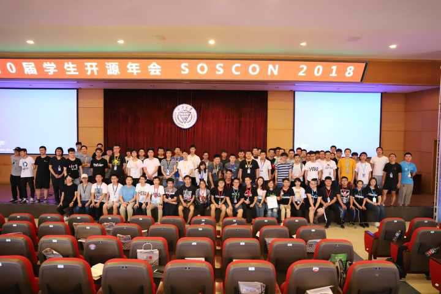

首届开源学生年会圆满举行
2018 年 6 月 9 日 - 10 日，首届学生开源年会 (SOSCON 18 ) 在重庆大学顺利举办。作为本次活动的合作社区，华南农业大学 Linux 用户小组 ( SCAULUG ) 三人代表团秉持对开源技术的精神及热爱来到山城重庆。
0x00 开幕
在主办方组织下，首届由中国学生组织举办的开源技术峰会正式拉开帷幕。大会开幕式上，别开生面的“开源博览会”环节向参会者介绍了目前在中国大陆地区相对活跃却未完善社区环境的各种开源项目，这其中既包括常用的 Gnome 和 KDE 等成熟项目，也包括了像 Requests、Kotlin 等备受瞩目的新兴项目。不可否认，在国外的开源社区中，这批项目获得了大家的一致称赞及支持；但在中文社区中，由于本地化文档以及交流平台的缺失，它们在国内的关注度未能达到应有的水平，使用上也有所困难，而广大开发者、维护者、使用者之间的交流也有所阻碍。因此，我们认为，一个项目要在国内普及开来，首先要有一个对应的中文社区环境，其次还需要一份准确、明了的官方文档翻译，以便国内开发者与用户使用。而最后还应提供一个以中文语言为基础的交流平台，供项目参与者进行方便、顺畅的交流。拥有了完善的中文社区后，项目的推广与发展才能更加顺畅，用户体验才能得以提升，更多开发者才能认识到这些优秀的项目，并积极投身于此。
0x01 闪电演讲
“闪电演讲”环节，李锦权同学代表华南农业大学 Linux 用户小组进行了一次简单的演讲，内容包括介绍了SCAULUG 这一社区一年来的发展历程以及华南农业大学镜像站的建立及发展，同时对未来社区工作的展望，并将与其他优秀开源社区的交流中了解学习了如何完善发展我们的社区。
0x02 开源辩论
在“开源辩论会”环节，社区代表郑靖宇同学也上台就“微软收购 GitHub 是否有利”的辩题进行辩论及探讨，对 GitHub 和开源世界未来的发展作出了展望及期待。
0x03 The End
在这场充满乐于分享、敢于付出的精神的大会上，我们被与会人员洋溢出的新生代大学生对开源技术的热情所打动。作为一个刚成立一年的年轻社区，我们深知还有很长一段路要走。而通过此次峰会与其他优秀社区进行的深入交流，我们也学习了如何发展一个开源社区，以及怎样更好地为中国开源届作出贡献，为发展好我们华南农业大学的开源社区树立了决心与信心。
最后感谢大会主办方的组织与邀请，让我们获得了参与这个充满活力的学生开源年会的机会，也感谢与会人员精彩纷呈的演讲及交流，让我们吸收了建设开源社区的宝贵经验，同时也祝贺此次开源年会圆满结束。让我们共同传承开源精神、传播理想主义情怀，也让我们共同期待下一次开源年会的到来吧！
